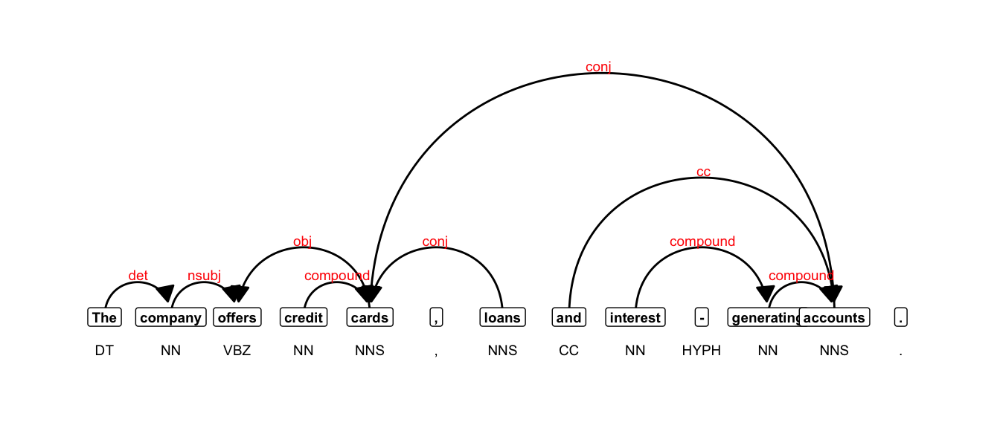

library(tidyverse)
library(quanteda)
library(quanteda.textstats)
library(udpipe)6 Part-of-speech tagging and dependency parsing
In the previous lab, we worked with keyness and effect sizes, specifically using log-likelihood and log ratio measures.
We are now going to add to our toolkit by using the same measures, but applied to data that has been tagged and parsed. To our processing pipeline, we will be adding udpipe: https://bnosac.github.io/udpipe/en/
6.1 What does udpipe do?
Before we start processing in R, let’s get some sense of what “universal dependency parsing” is and what its output looks like.
6.1.1 Parse a sample sentence online
Go to this webpage: http://lindat.mff.cuni.cz/services/udpipe/.
And paste the following sentence into the text field:
The company offers credit cards, loans and interest-generating accounts.
Then, click the “Process Input” button. You should now see an output. If you choose the “Table” tab, you can view the output in a tablular format.
6.1.2 Basic parse structure
There is a column for the token and one for the token’s base form or lemma.
Those are followed by a tag for the general lexical class or “universal part-of-speech” (upos) tag, and a tree-bank specific (xpos) part-of-speech tag.
The xpos tags are Penn Treebank tags, which you can find here: https://www.ling.upenn.edu/courses/Fall_2003/ling001/penn_treebank_pos.html
The part-of-speech tags are followed by a column of integers that refer to the id of the token that is at the head of the dependency structure, which is followed by the dependency relation identifier.
For a list of all dependency abbreviaitons see here: https://universaldependencies.org/u/dep/index.html.
6.1.3 Visualize the dependency
From the “Output Text” tab, copy the output start with the sent_id including the pound sign
Paste the information into the text field here: https://urd2.let.rug.nl/~kleiweg/conllu/. Then click the “Submit Query” button below the text field. This should generate a visualization of the dependency structure.
6.2 Load the needed packages
Load the functions:
source("../R/keyness_functions.R")Load the data:
load("../data/sample_corpus.rda")7 Parsing
7.1 Preparing a corpus
When we parse texts using a model like ones available in udpipe or spacy, we need to do very little to prepare the corpus. We could trim extra spaces and returns using str_squish() or remove urls, but generally we want the text to be mostly “as is” so the model can do its job.
7.2 Download a model
You only need to run this line of code once. To run it, remove the pound sign, run the line, then add the pound sign after you’ve downloaded the model. Or you can run the next chunk and the model will automatically be downloaded in your working directory.
# udpipe_download_model(language = "english")7.3 Annotate a sentence
txt <- "The company offers credit cards, loans and interest-generating accounts."
ud_model <- udpipe_load_model("../models/english-ewt-ud-2.5-191206.udpipe")
annotation <- udpipe(txt, ud_model)| token_id | token | lemma | upos | xpos | feats | head_token_id | dep_rel |
|---|---|---|---|---|---|---|---|
| 1 | The | the | DET | DT | Definite=Def|PronType=Art | 2 | det |
| 2 | company | company | NOUN | NN | Number=Sing | 3 | nsubj |
| 3 | offers | offer | VERB | VBZ | Mood=Ind|Number=Sing|Person=3|Tense=Pres|VerbForm=Fin | 0 | root |
| 4 | credit | credit | NOUN | NN | Number=Sing | 5 | compound |
| 5 | cards | card | NOUN | NNS | Number=Plur | 3 | obj |
| 6 | , | , | PUNCT | , | NA | 7 | punct |
| 7 | loans | loans | NOUN | NNS | Number=Plur | 5 | conj |
| 8 | and | and | CCONJ | CC | NA | 12 | cc |
| 9 | interest | interest | NOUN | NN | Number=Sing | 11 | compound |
| 10 | - | - | PUNCT | HYPH | NA | 11 | punct |
| 11 | generating | genera | NOUN | NN | Number=Sing | 12 | compound |
| 12 | accounts | account | NOUN | NNS | Number=Plur | 5 | conj |
| 13 | . | . | PUNCT | . | NA | 3 | punct |
7.4 Plot the annotation
We can also plot the dependency structure using igraph:
library(igraph)
library(ggraph)First we’ll create a plotting function.
plot_annotation <- function(x, size = 3){
stopifnot(is.data.frame(x) & all(c("sentence_id", "token_id", "head_token_id", "dep_rel",
"token_id", "token", "lemma", "upos", "xpos", "feats") %in% colnames(x)))
x <- x[!is.na(x$head_token_id), ]
x <- x[x$sentence_id %in% min(x$sentence_id), ]
edges <- x[x$head_token_id != 0, c("token_id", "head_token_id", "dep_rel")]
edges <- edges[edges$dep_rel != "punct",]
edges$head_token_id <- ifelse(edges$head_token_id == 0, edges$token_id, edges$head_token_id)
nodes = x[, c("token_id", "token", "lemma", "upos", "xpos", "feats")]
edges$label <- edges$dep_rel
g <- graph_from_data_frame(edges,
vertices = nodes,
directed = TRUE)
ggraph(g, layout = "linear") +
geom_edge_arc(ggplot2::aes(label = dep_rel, vjust = -0.20), fold = T,linemitre = 2,
arrow = grid::arrow(length = unit(3, 'mm'), ends = "last", type = "closed"),
end_cap = ggraph::label_rect("wordswordswords"),
label_colour = "red", check_overlap = TRUE, label_size = size) +
geom_node_label(ggplot2::aes(label = token), col = "black", size = size, fontface = "bold") +
geom_node_text(ggplot2::aes(label = xpos), nudge_y = -0.35, size = size) +
theme_graph(base_family = "Arial Narrow")
}And plot the annotation:
plot_annotation(annotation, size = 2.5)
8 Annotate a corpus
Parsing text is a computationally intensive process and can take time. So for the purposes of this lab, we’ll create a smaller sub-sample of the the data. By adding a column called text_type which includes information extracted from the file names, we can sample 5 texts from each.
set.seed(123)
sub_corpus <- quanteda.extras::sample_corpus %>%
mutate(text_type = str_extract(doc_id, "^[a-z]+")) %>%
group_by(text_type) %>%
sample_n(5) %>%
ungroup() %>%
dplyr::select(doc_id, text)8.1 Parallel processing
Parallel processing is a method whereby separate parts of an overall complex task are broken up and run simultaneously on multiple CPUs, thereby reducing the amount of time for processing. Part-of-speech tagging and dependency parsing are computationally intensive, so using parallel processing can save valuable time.
The udpipe() function has an argument for assigning cores: parallel.cores = 1L. It’s easy to set up, so feel free to use that option.
A second option, requires more preparation, but is even faster. So we’ll walk through how it works. First, we will split the corpus based on available cores.
corpus_split <- split(sub_corpus, seq(1, nrow(sub_corpus), by = 10))For parallel processing in R, we’ll us the package future.apply.
library(future.apply)Next, we set up our parallel session by specifying the number of cores, and creating a simple annotation function.
ncores <- 4L
plan(multisession, workers = ncores)
annotate_splits <- function(corpus_text) {
ud_model <- udpipe_load_model("../models/english-ewt-ud-2.5-191206.udpipe")
x <- data.table::as.data.table(udpipe_annotate(ud_model, x = corpus_text$text,
doc_id = corpus_text$doc_id))
return(x)
}Finally, we annotate using future_lapply. On my machine, this takes roughly 32 seconds.
annotation <- future_lapply(corpus_split, annotate_splits, future.seed = T)As you might guess, the output is a list of data frames, so we’ll combine them using rbindlist().
annotation <- data.table::rbindlist(annotation)9 Process with quanteda
9.1 Format the data for quanteda
If we want to do any further processing in quanteda, we need to make a couple of adjustments to our data frame.
anno_edit <- annotation %>%
dplyr::select(doc_id, sentence_id, token_id, token, lemma, upos, xpos, head_token_id, dep_rel) %>%
rename(pos = upos, tag = xpos)
anno_edit <- structure(anno_edit, class = c("spacyr_parsed", "data.frame"))9.2 Convert to tokens
sub_tkns <- as.tokens(anno_edit, include_pos = "tag", concatenator = "_")9.3 Create a dfm
We will also extract and assign the variable text_type to the tokens object.
doc_categories <- names(sub_tkns) %>%
data.frame(text_type = .) %>%
mutate(text_type = str_extract(text_type, "^[a-z]+"))
docvars(sub_tkns) <- doc_categories
sub_dfm <- dfm(sub_tkns)And check the frequencies:
| feature | frequency | rank | docfreq | group |
|---|---|---|---|---|
| ._. | 6452 | 1 | 40 | all |
| ,_, | 5900 | 2 | 40 | all |
| the_dt | 5217 | 3 | 40 | all |
| and_cc | 2596 | 4 | 40 | all |
| of_in | 2513 | 5 | 40 | all |
| a_dt | 2256 | 6 | 40 | all |
| to_to | 1702 | 7 | 40 | all |
| in_in | 1645 | 8 | 40 | all |
| i_prp | 1497 | 9 | 36 | all |
| you_prp | 1202 | 10 | 36 | all |
9.4 Filter/select tokens
There are multiple ways to filter/select the tokens we want to count. We could, for example, just filter out all rows in the annotation data frame tagged as PUNCT, if we wanted to exclude punctuation from our counts.
I would, however, advise against altering the original parsed file. We may want to try different options, and we want to avoid having to re-parse our corpus, as that is the most computationally intensive step in the processing pipeline. In fact, if this were part of an actual project, I would advise that you save the parsed data frame as a .csv file using write_csv() for later use.
So we will try an alternative. We use the tokens_select() function to either keep or remove tokens based on regular expressions.
sub_dfm <- sub_tkns %>%
tokens_select("^.*[a-zA-Z0-9]+.*_[a-z]", selection = "keep", valuetype = "regex", case_insensitive = T) %>%
dfm()And check the frequencies:
| feature | frequency | rank | docfreq | group |
|---|---|---|---|---|
| the_dt | 5217 | 1 | 40 | all |
| and_cc | 2596 | 2 | 40 | all |
| of_in | 2513 | 3 | 40 | all |
| a_dt | 2256 | 4 | 40 | all |
| to_to | 1702 | 5 | 40 | all |
| in_in | 1645 | 6 | 40 | all |
| i_prp | 1497 | 7 | 36 | all |
| you_prp | 1202 | 8 | 36 | all |
| it_prp | 1168 | 9 | 39 | all |
| is_vbz | 1042 | 10 | 40 | all |
If we want to compare one text-type (as our target corpus) to another (as our reference corpus), we can easily subset the data.
acad_dfm <- dfm_subset(sub_dfm, text_type == "acad") %>% dfm_trim(min_termfreq = 1)
fic_dfm <- dfm_subset(sub_dfm, text_type == "fic") %>% dfm_trim(min_termfreq = 1)And finally, we can generate a keyness table,
acad_v_fic <- keyness_table(acad_dfm, fic_dfm) %>%
separate(col = Token, into = c("Token", "Tag"), sep = "_")From that data, we can filter specific lexical classes, like modal verbs:
| Token | Tag | LL | LR | PV | AF_Tar | AF_Ref | Per_10.4_Tar | Per_10.4_Ref | DP_Tar | DP_Ref |
|---|---|---|---|---|---|---|---|---|---|---|
| may | md | 3.99 | 1.43 | 0.05 | 13 | 5 | 10.28 | 3.81 | 0.16 | 0.40 |
| will | md | 3.66 | 1.14 | 0.06 | 17 | 8 | 13.44 | 6.09 | 0.54 | 0.60 |
| ill | md | 1.42 | 1.05 | 0.23 | 1 | 0 | 0.79 | 0.00 | 0.80 | NA |
| ought | md | 1.42 | 1.05 | 0.23 | 1 | 0 | 0.79 | 0.00 | 0.80 | NA |
| must | md | 0.13 | 0.32 | 0.72 | 6 | 5 | 4.74 | 3.81 | 0.43 | 0.60 |
| wo | md | 0.00 | 0.05 | 0.98 | 1 | 1 | 0.79 | 0.76 | 0.80 | 0.80 |
| ca | md | -0.17 | -0.53 | 0.68 | 2 | 3 | 1.58 | 2.28 | 0.80 | 0.60 |
| should | md | -0.22 | -0.36 | 0.64 | 6 | 8 | 4.74 | 6.09 | 0.26 | 0.35 |
| can | md | -3.34 | -0.80 | 0.07 | 16 | 29 | 12.65 | 22.08 | 0.35 | 0.22 |
| might | md | -3.63 | -1.95 | 0.06 | 2 | 8 | 1.58 | 6.09 | 0.60 | 0.68 |
| could | md | -6.15 | -0.91 | 0.01 | 22 | 43 | 17.39 | 32.74 | 0.26 | 0.24 |
| would | md | -9.22 | -1.31 | 0.00 | 14 | 36 | 11.07 | 27.41 | 0.31 | 0.21 |
| 'll | md | -12.97 | -3.75 | 0.00 | 1 | 14 | 0.79 | 10.66 | 0.80 | 0.24 |
| 'd | md | -32.38 | -5.53 | 0.00 | 0 | 24 | 0.00 | 18.28 | NA | 0.23 |
9.5 Extract phrases
We can also extract phrases of specific types. To so so, we first use the function as_phrasemachine() to add a new column to our annotation called phrase_tag.
annotation$phrase_tag <- as_phrasemachine(annotation$upos, type = "upos")Next, we can use the function keywords_phrases() to extract phrase-types based on regular expressions. Refer to the documentation for suggested regex patterns: https://www.rdocumentation.org/packages/udpipe/versions/0.8.6/topics/keywords_phrases.
You can also read examples of use cases: https://bnosac.github.io/udpipe/docs/doc7.html.
First, we’ll subset our data into annotations by text-type.
acad_anno <- annotation %>% filter(str_detect(doc_id, "acad"))
fic_anno <- annotation %>% filter(str_detect(doc_id, "fic"))acad_nps <- keywords_phrases(x = acad_anno$phrase_tag, term = tolower(acad_anno$token),
pattern = "(A|N)*N(P+D*(A|N)*N)*",
is_regex = TRUE, detailed = T)
fic_nps <- keywords_phrases(x = fic_anno$phrase_tag, term = tolower(fic_anno$token),
pattern = "(A|N)*N(P+D*(A|N)*N)*",
is_regex = TRUE, detailed = T)| keyword | ngram | pattern | start | end |
|---|---|---|---|---|
| largest creatures | 2 | AN | 2 | 3 |
| creatures | 1 | N | 3 | 3 |
| earth | 1 | N | 9 | 9 |
| animals | 1 | N | 11 | 11 |
| apatosaurus | 1 | N | 14 | 14 |
| aka | 1 | N | 16 | 16 |
Note that although the function uses the term keywords, it is NOT executing a hypothesis test of any kind.
9.6 Extract only unique phrases
Note that udpipe extracts overlapping constituents of phrase structures. Normally, we would want only unique phrases. To find those we’ll take advantage of the start and end indexes, using the between() function from the data.table package.
That will generate a logical vector, which we can use to filter out only those phrases that don’t overlap with another.
idx <- seq(1:nrow(acad_nps))
is_unique <- lapply(idx, function(i) sum(data.table::between(acad_nps$start[i], acad_nps$start, acad_nps$end) & data.table::between(acad_nps$end[i], acad_nps$start, acad_nps$end)) == 1) %>% unlist()
acad_nps <- acad_nps[is_unique, ]idx <- seq(1:nrow(fic_nps))
is_unique <- lapply(idx, function(i) sum(data.table::between(fic_nps$start[i], fic_nps$start, fic_nps$end) & data.table::between(fic_nps$end[i], fic_nps$start, fic_nps$end)) == 1) %>% unlist()
fic_nps <- fic_nps[is_unique, ]We can also add a rough accounting of the lengths of the noun phrases by summing the spaces and adding 1.
acad_nps <- acad_nps %>%
mutate(phrase_length = str_count(keyword, " ") + 1)
fic_nps <- fic_nps %>%
mutate(phrase_length = str_count(keyword, " ") + 1)| keyword | ngram | pattern | start | end | phrase_length | |
|---|---|---|---|---|---|---|
| 1 | it | 1 | N | 1 | 1 | 1 |
| 3 | pleasant summer night | 3 | ANN | 4 | 6 | 3 |
| 8 | wind off the ocean | 4 | NPDN | 10 | 13 | 4 |
| 12 | trees along copley square | 4 | NPNN | 16 | 19 | 4 |
| 16 | i | 1 | N | 21 | 21 | 1 |
| 19 | boston public library | 3 | NNN | 25 | 27 | 3 |